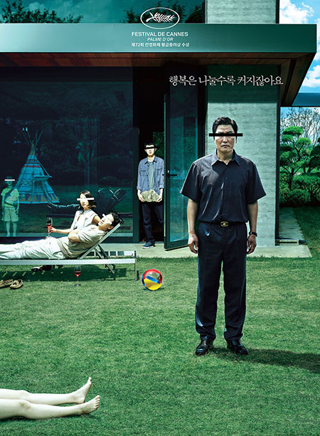

MOVIE
영화

K-MOVIE
이전에 헐리웃에 동양인 감독 및 배우, 영화가 진출한다는 것은
상상할 수도 없는 일이었다.
드라마 분야는 종종 같은 동양권인 중국이나, 일본에서 유행하는 경우도 있었지만,
서양권에서는 흥행하기 어려울뿐더러,
당연히 시상식에 후보로 오르는것조차 힘들었다.
하지만 봉준호 감독의 괴물, 옥자, 설국열차 등을 계기로
한국영화는 점점 세계적인 경쟁력을 갖췄음을 입증하기 시작했다.
그리고, 영화 '기생충'으로 정적을 찍고 한국인 감독, 한국 영화가 오스카 시상식에서 수상을 하는 쾌거를 이루어 냈다.